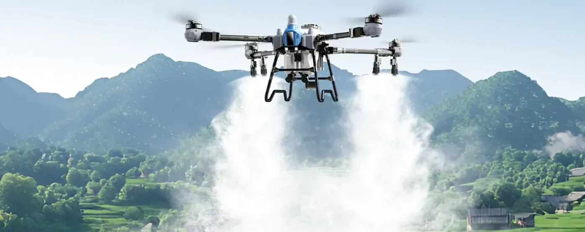

Menggerakkan Masa Depan Pertanian Indonesia
PT Diesel Agri Sukses Sejahtera adalah mitra berdedikasi dalam memajukan sektor pertanian dan perkebunan Indonesia. Sebagai distributor dan pengecer terkemuka, kami berspesialisasi dalam menyediakan mesin dan peralatan pertanian berkualitas tinggi serta drone pertanian yang dapat diandalkan oleh para petani dan pelaku usaha perkebunan.
Kami menggabungkan yang terbaik dari dua dunia: teknologi mutakhir dari produsen internasional terpercaya, di samping dukungan bangga untuk peralatan fabrikasi lokal yang luar biasa. Pendekatan ganda ini memungkinkan kami menawarkan solusi yang terbukti secara global namun relevan secara lokal, dibuat untuk realitas pertanian Indonesia.
Kami percaya pertanian modern menuntut lebih dari sekadar alat berat. Ia membutuhkan solusi menyeluruh yang menangani setiap tahap proses pertanian dan perkebunan. Itu sebabnya misi kami melampaui sekadar menjual mesin. Kami di sini untuk memberdayakan petani dan operator agribisnis dengan peralatan yang mereka butuhkan untuk memaksimalkan efisiensi, meningkatkan hasil panen, dan membangun masa depan yang lebih berkelanjutan bagi pertanian Indonesia.


 3
Merek Global, Distributor Resmi
3
Merek Global, Distributor Resmi
Visi & Misi
Menjadi mitra paling terpercaya di Indonesia dalam mekanisasi pertanian, mendorong produktivitas, keberlanjutan, dan kemakmuran bagi petani dan pelaku usaha perkebunan di seluruh Indonesia.
Misi
Menyediakan mesin pertanian berkualitas tinggi dan andal dari produsen internasional terkemuka
Memperjuangkan dan mempromosikan peralatan fabrikasi lokal yang unggul di samping teknologi global
Menyediakan solusi menyeluruh yang mendukung setiap tahap operasi pertanian dan perkebunan
Memberdayakan petani dan operator agribisnis dengan peralatan yang memaksimalkan efisiensi dan hasil panen
Membangun kemitraan jangka panjang yang didasarkan pada kepercayaan, layanan, dan pertumbuhan bersama
Berkontribusi pada keberlanjutan dan kemajuan sektor pertanian Indonesia
Bukan Sekadar Penjual Unit
Produk Bergaransi
Unit resmi dari prinsipal, disertai garansi dan dokumen lengkap.
Distributor Resmi
Unit asli dari Zoomlion, EAVision, dan VectorAgr, dijual langsung oleh distributor resminya.
Spesifikasi Lengkap
Data teknis, brosur PDF, dan fitur bandingkan unit tersedia langsung di website.
Konsultasi Teknis
Kami bantu menentukan unit yang sesuai luas lahan dan jenis pekerjaan.
Membangun Kolaborasi Jangka Panjang
Kami membuka peluang kemitraan strategis dengan pelaku usaha agrikultur, penyedia jasa mekanisasi, serta jaringan dealer di seluruh Indonesia